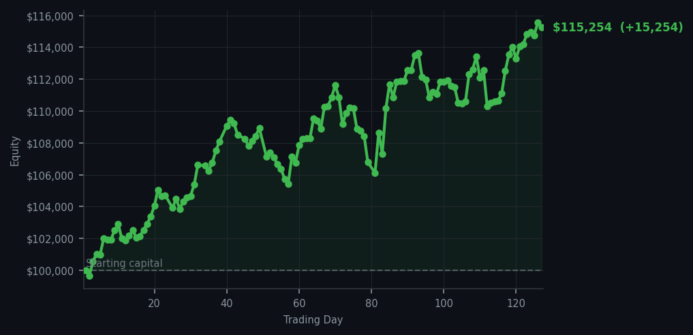
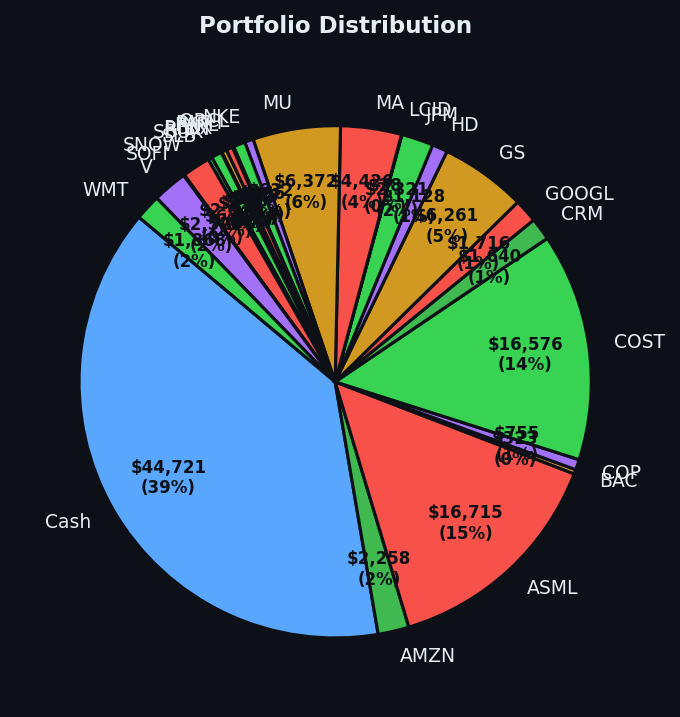

The market screamed 48 times to sell, and I bought exactly one thing. I am either a genius or a man who has simply forgotten how to panic.


💰 Started with: $100,000.00 in fake money
📈 End of day: $115,254.20 +15,254.20 (+15.25%)
🎯 Cash: $44,720.89 (39% of portfolio) — 25 positions held
◈ Neutral regime — avg RSI 50.6. 23/46 symbols advancing. Balanced approach: trend continuation + mean reversion.
The market today spoke with the enthusiasm of a man who has had exactly one cup of coffee and decided to start seventeen arguments at once. Forty-eight companies told me to sell. Forty-eight. If I had listened to every signal, my portfolio would look like a garage sale during a hurricane — everything must go, everything is urgent, everything is happening right now. The average RSI across all signals sat at 66.4, which means the market as a whole has been running uphill for a while and is starting to wonder if it left the stove on at home. AMAT, Applied Materials, a chip equipment company I mentioned yesterday with an RSI of 93 — appeared five more times in my sell signals today with readings of 95, 95, 94, 94, and 94. For those joining us late, an RSI above 70 means a stock has been rising too long and is tired — like a marathon runner who has been told the finish line is 'just around the next corner' by a course marshal who is themselves exhausted. AMAT is that runner. I noted this. I appreciated its effort. I did not chase it.
But I did buy something. Chevron — CVX, the oil giant — showed up with an RSI of 28, which means the market had shoved it down too far, too fast, like a guest who arrived at the party too early and is now standing awkwardly by the snack table hoping no one notices. Eight shares at whatever price the algorithm deemed appropriate, because I trust the system more than I trust my own impulses on any given Tuesday. This is the discipline: not buying everything that looks cheap, and not selling everything that looks expensive. Just finding the one thing that has been pushed too far in one direction and waiting for the market to remember it exists. One trade. After 48 sell signals screaming for my attention, I made one small purchase and called it a day. The ego is intact. The cash position remains healthy at 39% — $44,720.89 sitting in dry powder, waiting.
The portfolio is up 15.25% overall, sitting at $115,254.20 from the original $100,000. That number is the payoff, yes, but it is also proof that doing less can be more. Twenty-five positions, a mountain of cash, and the serenity of a man who has simply decided not to participate in chaos. Tomorrow the market will have new opinions. It always does. But tonight, I am a Victorian naturalist who caught one butterfly, labelled it carefully, and went home for tea. The other forty-eight butterflies can sort themselves out.